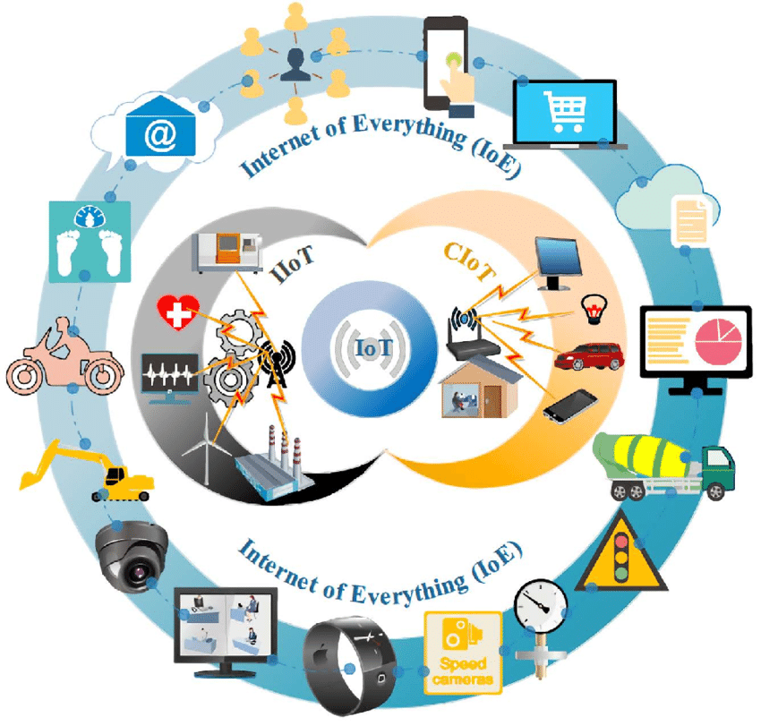

IOT
Autor:Balbuena Aguilar Luis Enrique

Definicion:
Es el proceso que permite conectar los elemnetos fisicos cotidianos al internet: desde los objetos domesticos
comunes , como las bombillas de luz , hasta los recursos para la atención de la salud ,
como los dispositivos médicos: las prendas y los accesorios personales inteligentes; e incluso los sitemas de las ciudades inteligentes.